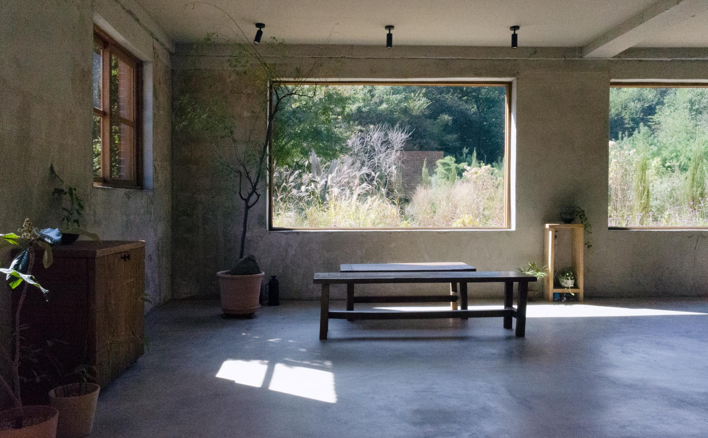
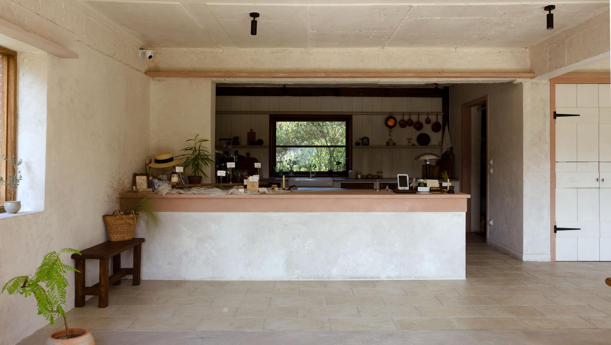
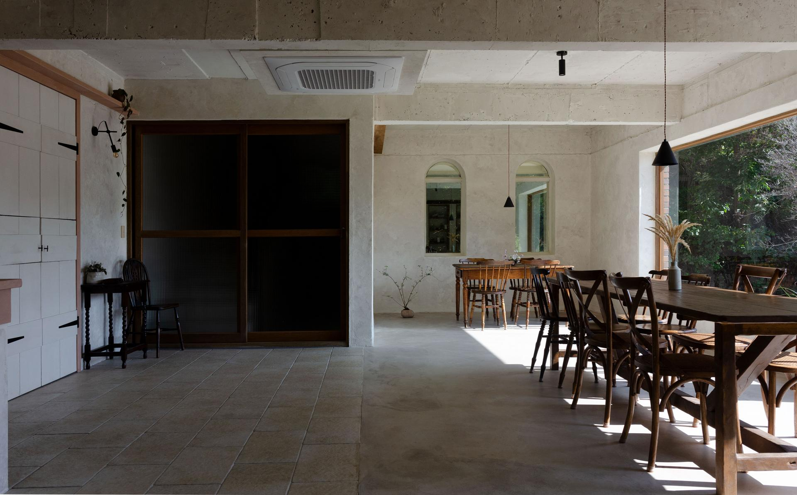
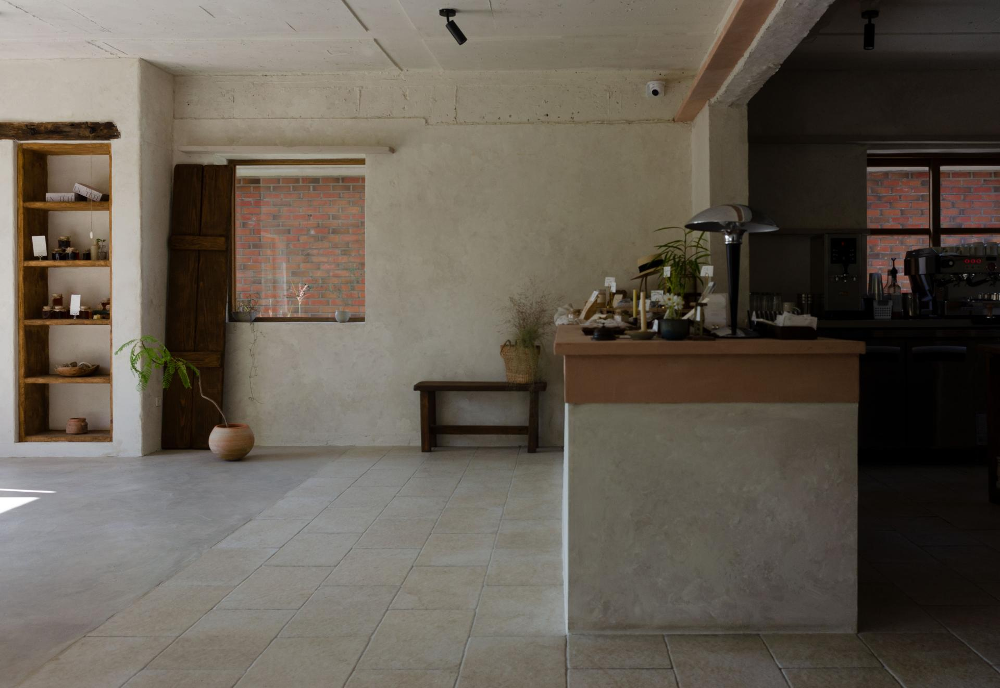
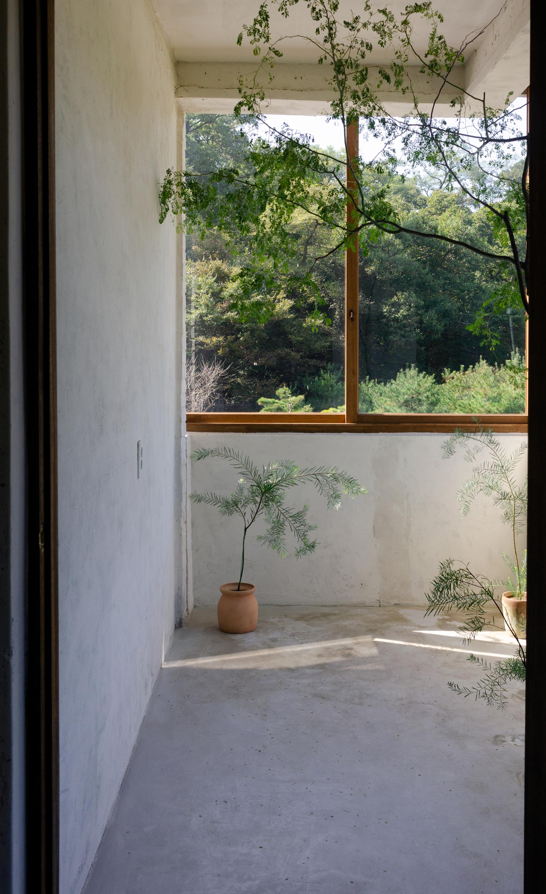
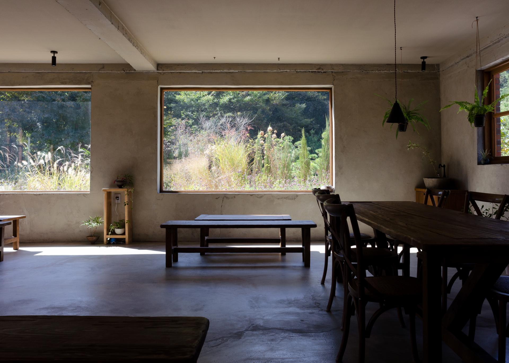
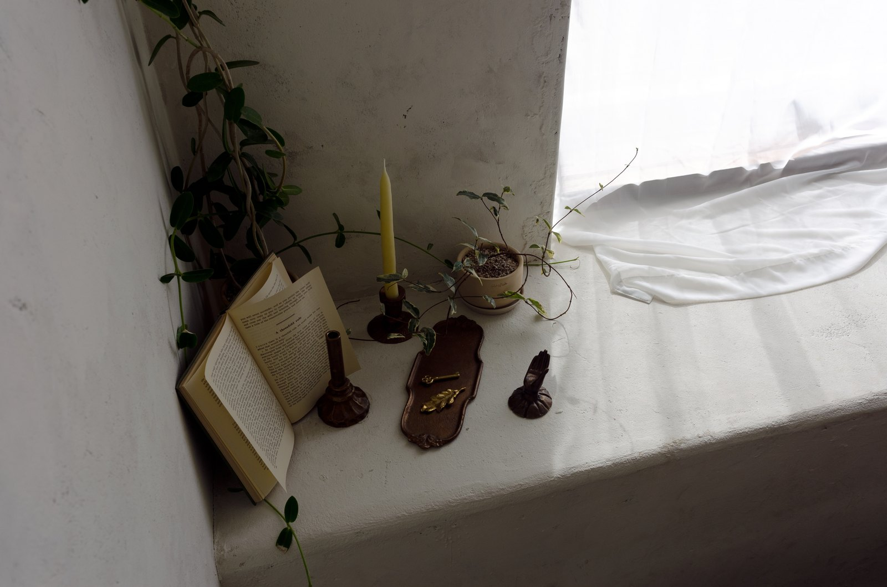
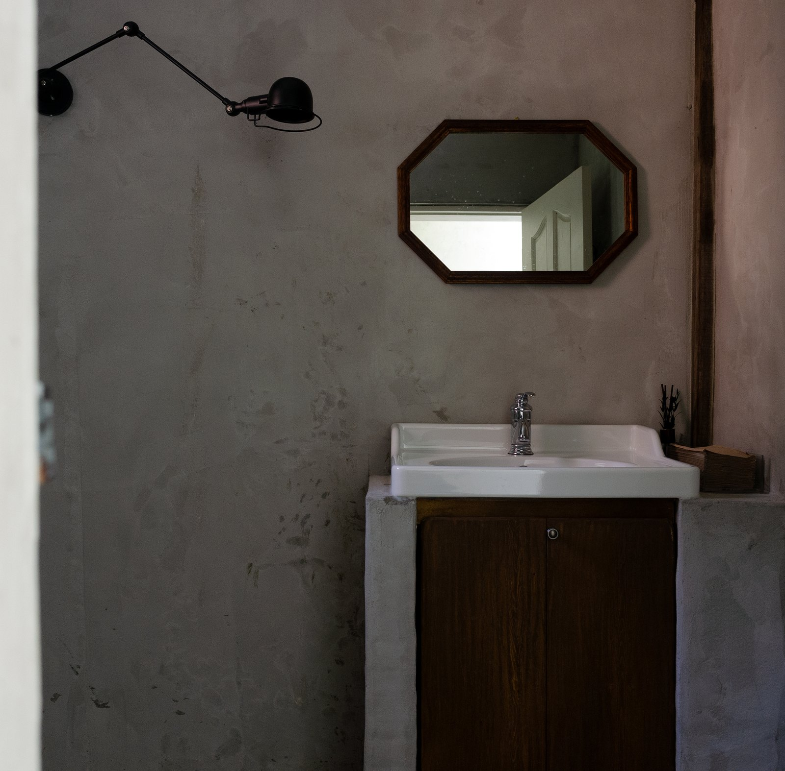
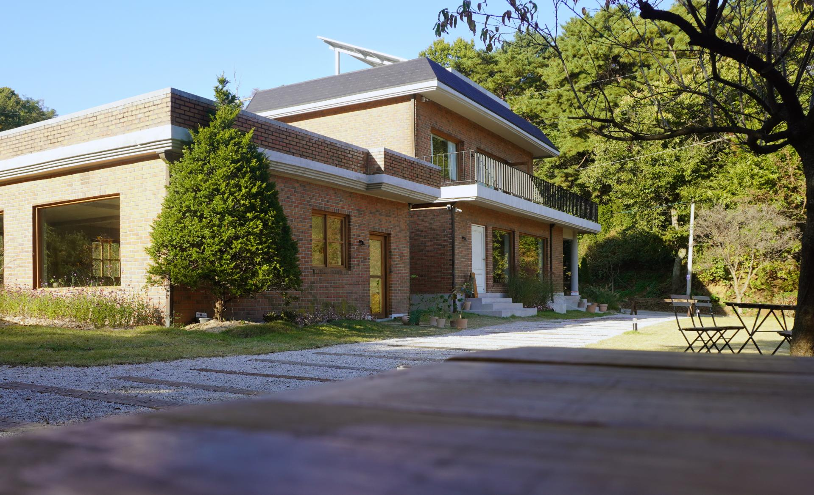
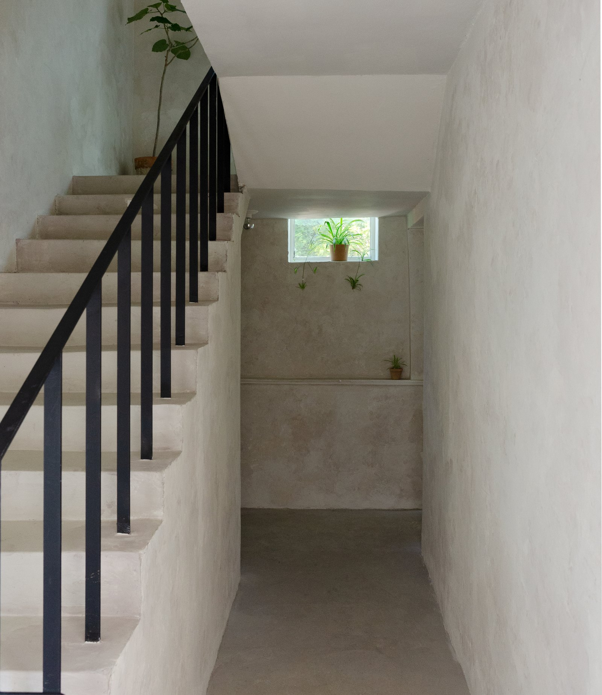

08Entetepere
고양 서리골, 94평 대형 카페. 'French farm house' 콘셉트 — 농장 무드를 살려 고재 테이블·식물, 침목 산책로, 미장 벽·스톤 타일·빈티지 우드. 포트폴리오 중 최대 규모.




미장 벽 · 스톤 타일 · 빈티지 우드 · 고재 · 정원






미장 벽 · 스톤 타일 · 빈티지 우드 · 고재 · 정원
설계 · 시공 · 조경 · 스타일링